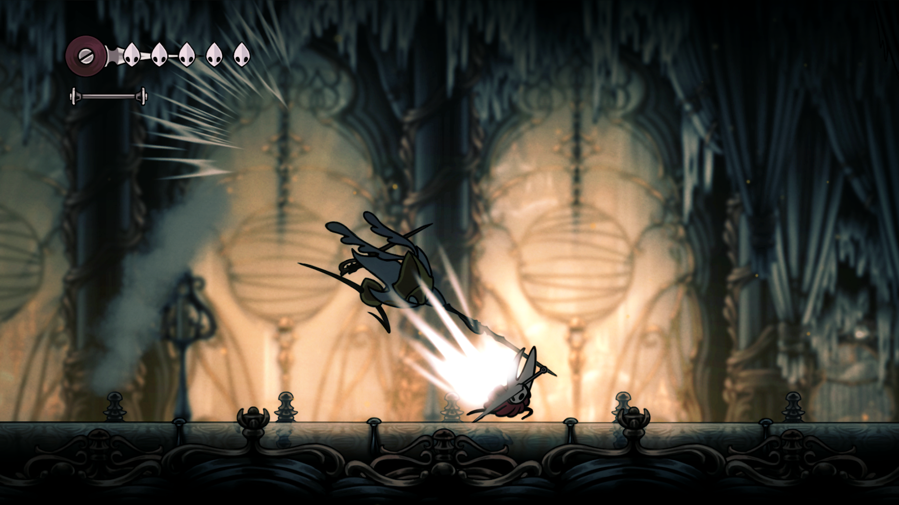

Disponível em:


Ascenda até o Pico de um Reino Assombrado
Capturada e Levada para uma Terra Distante
Capturada e Levada para uma Terra Distante Hornet, princesa protetora de Hallownest, encontra-se sozinha em um mundo vasto e desconhecido. Ela deve lutar contra inimigos, procurar aliados e resolver mistérios enquanto ascende em uma peregrinação mortal ao pico do reino.Presa por sua linhagem e guiada por ecos de seu passado, Hornet se aventurará por grutas cobertas de musgo, florestas de corais e cidadelas brilhantes para desvendar um fio mortal que ameaça esta estranha nova terra.


Ação Acrobática e Letal
Hornet deve dominar um novo conjunto de movimentos poderosos para sobreviver. Ela desencadeará ataques devastadores, aprenderá incríveis habilidades de seda e criará ferramentas mortais para superar os desafios do reino.Mais de 150 novos inimigos estão entre Hornet e a brilhante cidadela que coroa o reino. Feras e caçadores, assassinos e reis, monstros e cavaleiros - Hornet deve enfrentá-los com bravura e habilidade!
Beleza e Maravilha em um Mundo Assombrado
O vasto mundo interconectado de Hollow Knight: Silksong ganha vida em um estilo 2D tradicional feito à mão. Cidades douradas, lagos de fogo e pântanos enevoados são ilustrados com detalhes requintados e acompanhados por uma trilha sonora orquestral vibrante.Em sua busca pela verdade por trás de sua captura, Hornet fará amizade com estranhos surpreendentes, descobrirá segredos chocantes e resolverá mistérios antigos em um reino cheio de maravilhas.